|
|
| sea stars text index | photo index |
| Phylum Echinodermata > Class Stelleroida > Subclass Asteroidea |
| Cake
sea star Anthenea aspera Family Oreasteridae updated Jul 2020 Where seen? This large, flat sea star is often seen on our Northern shores. Smaller ones are usually seen in seagrass meadows while larger ones are usually seen on coral rubble, sometimes wedged under large rocks. It is usually seen alone and usually more active at night. According to Lane, these sea stars were previously only seen from samples dredged from the channel between Pulau Ubin and Pulau Tekong. One was seen in a dive off Pulau Semakau. They are considered rare in the Indo-Pacific (only known from North Australia, southern Japan, China, Indonesia and Singapore) and little is known about them. According to Marsh and Fromont, it is found on muddy sand in Australia. Features: Diameter with arms 10-20cm. Stiff body, the upperside usually slightly convex. Ams are short with rounded tips. Large, neat marginal plates all around the edges. The upperside is covered with tiny pedicellariae (pincer-like structures). The underside is flat, usually with a pattern of bars that form chevrons around the arms, with large bivalved pedicellariae. The tube feet are short tipped with suckers. |
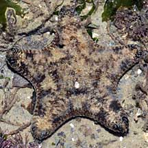 Changi, Jul 08 |
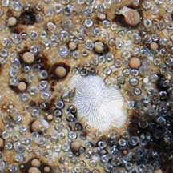 Upperside covered with tiny pedicellariae. |
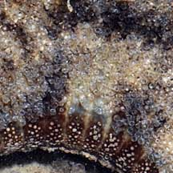 Large marginal plates on the sides. |
|
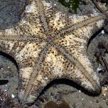 Underside usually with barred pattern. |
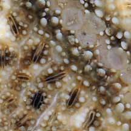 Large bivalve pedicellarie on underside |
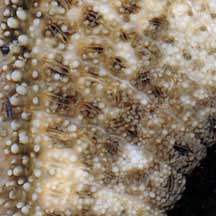 |
| Cake sea stars come in
a wide variety of patterns and colours, from black, brown, red, orange,
yellow to even green. Sometimes confused with the Biscuit sea star (Goniodiscaster scaber). and the Spiny sea star (Gymnanthenea laevis). Here's more on how to tell apart large sea stars seen on our shores. Status and threats: This star is listed as 'Vulnerable' in the Red List of threatened animals of Singapore. |
|
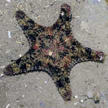 A young Cake sea star with slender arms. Changi, Jul 10 |
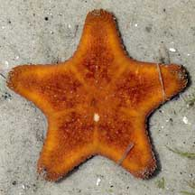 A small one with broad arms. Chek Jawa, Aug 07 |
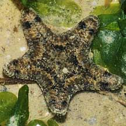 A small one with broad arms. Pasir Ris Park, Jan 09 |
|
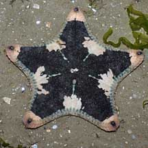 Changi, Jul 08 |
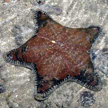 Tuas, Apr 08 |
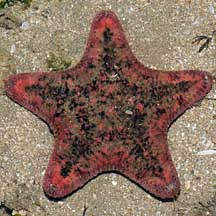 Chek Jawa, Jul 08 |
| Cake sea stars on Singapore shores |
On wildsingapore
flickr
|
| Other sightings on Singapore shores |
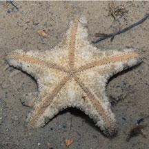 |
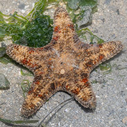 Young one Chek Jawa, May 25 |
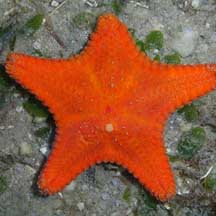 Cyrene Reef, Jul 08 |
|
Links
References
|